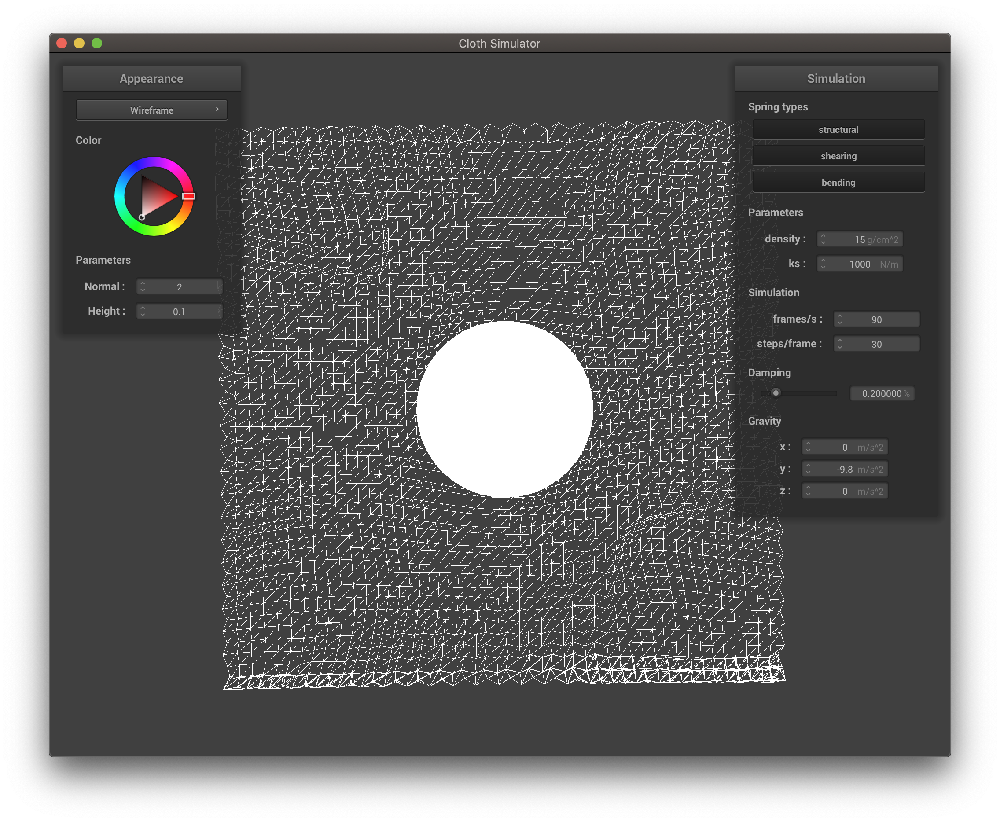
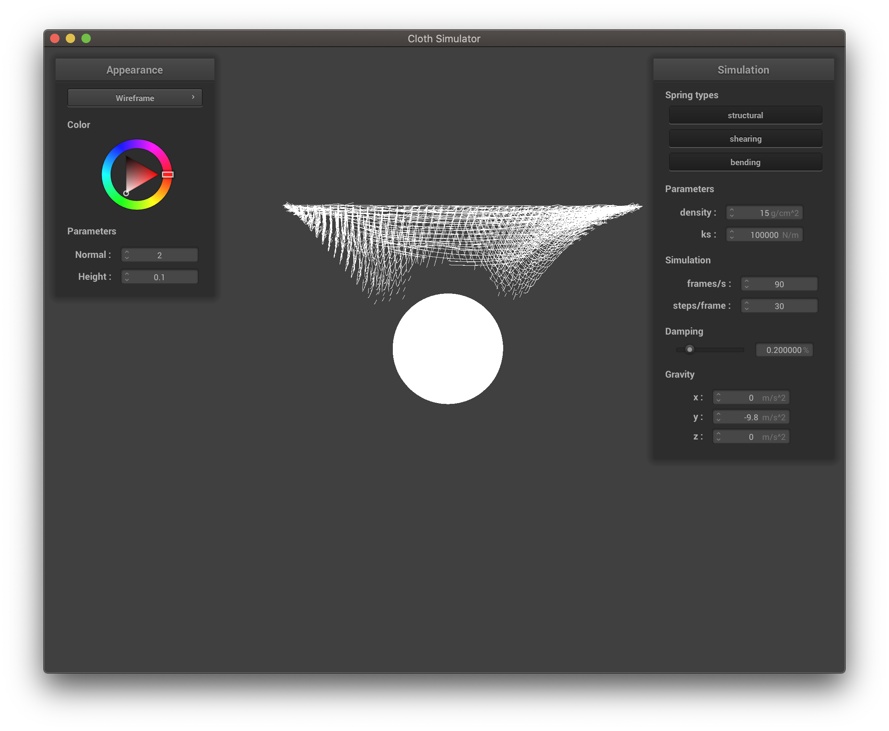

This project's focus was on extending the cloth simulation of project 4 to simulate materials as they fracture and break in different ways. The project consisted of two primary components; code infrastructure changes and fracture modeling. Much of the work spent on this project involved making changes to underlying structure of the project like enabling forces to act on spheres, introducing resistive elastic forces from a mesh on a sphere, and modifying the shaders to enable fractured appearances. On the fracture modeling side, we implemented an approach from a paper we found which generated realistic looking tears. We then added our own ideas to this approach for more interesting tearing and fracturing effects.
The first code change necessary to the simulation backbone was to enable spheres to move as forces (e.g. gravity) are applied. This was necessary so that we could collide spheres with pinned meshes to analyze stretches and tears.
To make this code change, we simply added a simulate method to the collisionObject
class that is called for every collision object in the same loop that the cloth's simulate is.
As well, we added a Vector3D force vector that accumulates forces applied to a sphere. The
sphere also maintains its first two moments so that we can update its position and velocity as in the
pointmass mesh. At every simulation step, we update the sphere as a rigid body around its center which
moves according to the following equations $x_t$
$$\begin{align} v_t & = k_dv_t + \Delta_t f / m \\ x_t & = x_{t-1} + \Delta_t * v_t \end{align}$$
where $v$ is velocity, $x$ is position, $k_d$ is a damping coefficient, $f$ is the accumulated force
vector, and $m$ is the sphere mass.
The modeling assumption used here are that the sphere is accurately modeled as a rigid body.
For the result of this code change see the first figure in the results.
The second code change to enable realistic fracturing was to make the mesh resist the sphere by applying an opposing force to the sphere. To enable the cloth to apply a resistive force, we added a constant $k_r$ to allow us to control the "stretchiness" of the mesh and added the following force point by point on a collision to the sphere $$k_r||x_a - x_b|| * \frac{c - x_b}{||c - x_b||}$$ where $x_a$ is the position of a point before sphere displacement, $x_b$ is the position of the point after sphere displacement, and $c$ is the center of the sphere.
Overall this code change involved a small change to implement the equation above and a few larger structural changes to how collisions are handled and when sphere moments are updated.
The results of this change are in figures 2 and 3 below.
The third major code change we had to make was to enable shaders to show the breaking. To make this change, we decided to break in units of triangles for the shader. If a spring is broken, it is marked broken along with its point masses. We use this flag as a mask variable to each of the shaders; the shaders set the color of a vertex to $(0, 0, 0, 0)$ if it has been broken.
The result of this is that the shaders now show holes in the mesh. Although the examples given below are jagged, you can image with a higher resolution mesh the breaks appear more fine. Higher resolution meshes seemed to slow down our computers unbearably so, and as a result these examples are not included.
An example image before this code change is seen in Figure 4. Figures 5 and 6 represent successful breaks with the shaders.
Our first strategy for assigning fracture thresholds was random assignment. This was suggested in this paper so that the fractures would occur in arbitrary places and not all at once. In implementing this, we created a max and min threshold parameter, and assigned thresholds randomly at uniform within this range. Our results varied greatly depending on how we defined this parameter, and required some experimentation. Wider ranges would leave some springs very resistant to fracture and leave us with a stringy cloth. Very low thresholds also proved problematic as the cloth would splinter and fracture too much, sometimes leaving us without a cloth at all. Some examples are below.
|

|

|
One problem we noticed with the randomized fracture was that any fractures not at the point of contact looked
very unrealistic when the shaders were enabled. There would be random holes that did not make sense.
Looking for a solution, we tried a more deterministic way of assigning thresholds. This allowed us to model more
realisic looking tears and heavily control the behavior of the mesh.
For this, we created cloths where there were only one or two columns in the mesh which had fracture
thresholds. Here is an example:
As you can see, the shaders do not have strange holes and the cloth tears in a fairly realistic manner, widening
the one large tear as the sphere pushes through, instead of creating a small hole in the middle and random ones
on the side.
This was rendered at a very high cloth resolution as this made the cloth tears look less blocky and more
realistic. This decreased the speed of the simulation greatly.
Although these results allow us more freedom to create realistic looking tears, this strategy is not easily
expanded. Each new affect has to be implemented by hand, and the parameters have to be tweaked after this to get
just the right looking cloth. Thus, we moved on to a more complex strategy that was both random and systematic.
One addition off of the papers we based this project on is centroid assignment. The goal of centroid assignment is to break the cloth into shards or chunks for more chunked fracture than the previous implementations gave.
The changes needed to implement this threshold assignment begin before mesh creation. First, we choose $k$ centroids at random across the mesh (where $k$ is a configurable parameter). We experimented with two random centroid methods; choosing uniformly at random across the mesh and choosing from a gaussian centered at the center of the mesh and capped at the edges.
Once the centroids are determined, we cluster the pointmasses according to nearest centroid, that is $$cluster_x = \text{argmin}_i ||c_i - x||_2$$ where $c_i$ is the ith centroid and $x$ is the pointmass in question. The threshold for each spring is then randomly chosen as in the previous two methods if the spring's pointmasses are in different clusters and the threshold is set to infinity for springs whose points lie in the same cluster. As a result, when the cloth fractures it shatters into shards. See the section on Shard Fracture for results.
Determining when and where to fracture the springs is only half the battle. After marking a spring as fractured, we have a lot of freedom to determine the behavior of the mesh and the rendering. Our first strategy was to make each spring dissapear after it was fractured. This, as we soon learned, only worked for the wireframe, and sometimes left springs hanging alone in the air or produced other strange affects. Attempting to remedy these strange affects and correct the shaders, we decided to mark each triangle connected to the spring, and mask these fractured triangles within the shaders. This however, did not work as it exposed the triangle mesh structure in the cloth and made it look very unrealistic.
Shard fracture builds off centroid assignment for fracture modeling. Shard fracture can be broken down into two behaviors.
The first behavior of shard fracturing is to simply use the thresholds defined by centroid assignment. As a result, it is impossible for springs to fracture unless they lie on the boundary between two paritions of the mesh. This results in a kind of seam-aligned fracture that may be more realistic for materials than the approach of randomly assigning thresholds. Essentially the difference here is between more realistic random tears versus less realistic random holes.
A visualization of this random tearing is below
The second behavior shard fracture implements is sharded fracture. That is, completely fracturing the shards into clusters. This is useful for shattering things like glass and plastics. To implement this effect we simply unpin all vertices and remove all edges that cross clusters upon initial collision. Of course, this is missing some realism, but the fracturing into shards - the key contribution - is achieved.
A visualization of the sharded fracture is seen below.
One problem we encountered while rendering this simulation was that the cloth would stick to the sphere as a result of the naive sphere intersection code. To remedy this, we changed the code to conform each spring to stay the same length after each timestep instead of 1.1 times its length. This pulled the vertices away from the sphere and helped our fracture look better.
Apart from the challenges and problems faced we had one major challenge that we weren't able to overcome. In particular, we had planned in our milestones to do 3D simulations with lattices of cubes. However, after spending exorbitant amounts of time trying to render a new mesh structure, we abandoned this pursuit in favor of more 2D results. A suggestion for future improvement of this would be to implement 3D strucutres as the current fracture code could translate directly to a correctly implemented mesh.
As well, a lesson we learned along the way was just how important random mesh structures are for realism. Our experiments that didn't have random thresholds looked far less realistic than our experiments with random tears and thresholds. It has proven almost necessary to add randomness to a physical model in order to simulate surface and structural defects.
Both partners contributed equally overall and the ideas for improvement over the papers came from ideation on both sides.
Below are our results, open in a new tab if they load slow.

|

|

|

|